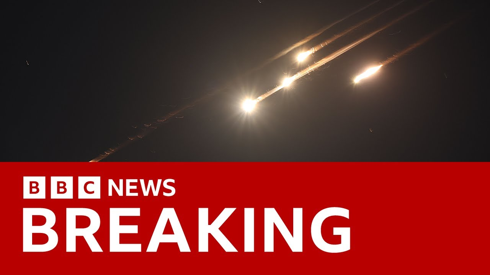

【伊朗向以色列发射弹道导弹 | BBC新闻】
Summary: We begin with breaking news from the Middle East: Iran has launched a retaliatory strike against Israel. This is live footage from Tel Aviv, where large plumes of smoke can be seen rising over the city. It’s unclear whether the cause was a missile strike or an interception, but according to AFP, emergency services report seven people injured on the ground. This footage was taken an hour ago, showing Israel’s air defense systems intercepting missiles over Tel Aviv. We also witnessed a large explosion, though the target and casualties remain unknown at this time. Images show a building was hit, with reports of injuries. Local colleagues described hearing multiple loud booms that shook windows, and our Jerusalem correspondent noted sightings of drones. Meanwhile, Israel says it is continuing airstrikes on Iranian military targets.
摘要： 我们从中东突发新闻开始，伊朗对以色列发动报复性打击。这是特拉维夫的现场画面，可以看到城市上空升起巨大烟柱。尚不清楚是导弹袭击还是拦截所致，但据法新社报道，急救部门称地面有7人受伤。这是一小时前的画面，防空系统在特拉维夫上空拦截导弹。我们还看到一次大爆炸，目前不确定被击中的目标及伤亡情况，但有图像显示一栋建筑被击中并有受伤报告。当地同事称听到多次震窗巨响，耶路撒冷记者观察到无人机。以色列表示正持续空袭伊朗军事目标。

⏱️ Estimated Reading Time: 8 min
📚 六级生词 📚 雅思生词 📚 托福生词 📚 专八生词 📚 SAT生词 📚 考研生词 📚 GRE生词 📚 高考生词
We begin with breaking news from the Middle East as Iran launches retaliatory strikes against Israel.
我们从来自中东的突发新闻开始，伊朗对以色列发动了报复性打击。
These are the live pictures from Tel Aviv where we can see huge plumes of smoke rising over the city.
这是来自特拉维夫的现场画面，我们可以看到城市上空升起的巨大烟柱。
It's not clear if they came from missile strikes or the interceptions, but emergency services say seven people were injured on the ground according to the AFP news agency.
目前尚不清楚这些烟雾是来自导弹袭击还是拦截行动，但急救部门表示，据法新社报道，地面有七人受伤。
This is how it looked about an hour ago with air defense systems intercepting missiles above Tel Aviv.
大约一小时前，防空系统在特拉维夫上空拦截导弹的画面是这样的。
And we've also seen a big explosion.
我们还看到了一次巨大的爆炸。
Not sure yet what was hit and of any confirmed injuries, but we are getting some images suggesting that a building certainly has been hit and some reports of injuries.
目前尚不清楚具体击中了什么以及是否有确认的伤亡，但我们收到的一些图像显示，一栋建筑确实被击中，并有受伤的报告。
Our colleagues on the ground say they've heard several window-rattling booms.
我们在现场的同事表示，他们听到了几次震得窗户摇晃的爆炸声。
Our reporter in Jerusalem has seen drones.
我们在耶路撒冷的记者看到了无人机。
Israel says it's continuing its air strikes on Iranian military targets.
以色列表示，它正在继续对伊朗军事目标进行空袭。
Meanwhile, following that first wave of attacks last night, which hit nuclear sites and several targets in the capital.
与此同时，昨晚的第一波袭击击中了核设施和首都的几个目标。
This video shows the aftermath of a new air strike near Tehran in the city of Qandahar.
这段视频显示了德黑兰附近甘达哈尔市新一轮空袭的后果。
And Iranian media say the country's air defense is now activated in central Tehran.
伊朗媒体表示，该国的防空系统现已在德黑兰中部启动。
A loud explosion's also been heard in Isfahan.
伊斯法罕也听到了一声巨大的爆炸声。
And it comes after several of Iran's military leaders and six of the nation's top nuclear scientists were killed with state media reporting that civilians, including children, are amongst the dead.
此前，伊朗的几名军事领导人和六名该国顶级核科学家被杀，官方媒体报道称，死者中包括儿童在内的平民。
Iran's airspace has been closed indefinitely, forcing hundreds of flights to take longer routes around the conflict zone.
伊朗领空已无限期关闭，迫使数百架航班绕冲突区飞行更长的路线。
And in the last couple of hours, Russia's leader, President Putin, has spoken to both the Iranian president and the Israeli prime minister, condemning the Israeli strikes and offering mediation between the countries.
过去几小时，俄罗斯领导人普京总统与伊朗总统和以色列总理进行了通话，谴责以色列的袭击，并提出在两国之间进行调解。
Well, let me just show you also live pictures from New York because the UN Security Council is about to start an emergency meeting to discuss the situation.
让我也向您展示来自纽约的现场画面，因为联合国安理会即将召开紧急会议讨论局势。
We'll bring that to you live.
我们将为您带来现场报道。
The Iranian Foreign Minister has said that Israel has crossed every red line and the international community must not let these crimes go unpunished.
伊朗外长表示，以色列已经越过了所有红线，国际社会绝不能对这些罪行坐视不管。
Ioni Wells, our correspondent is in Jerusalem.
我们的记者伊奥尼·韦尔斯在耶路撒冷。
Ioni, just bring us up to date with what we know is happening in Israel with these strikes continuing.
伊奥尼，请向我们介绍以色列目前的情况，这些袭击仍在继续。
That's right.
没错。
In the last couple of moments, Iran's state media and the Iranian Revolutionary Guard have confirmed that Iran is indeed trying to strike targets in Israel.
就在刚才，伊朗官方媒体和伊朗革命卫队证实，伊朗确实正在试图打击以色列的目标。
They have said that they are launching the third round of missile retaliatory strikes on Israel.
他们表示，他们正在对以色列发动第三轮导弹报复性打击。
So that explains why we have seen images of drones of explosions both here in Jerusalem but also in Tel Aviv as well.
这解释了为什么我们在耶路撒冷和特拉维夫都看到了无人机和爆炸的画面。
Now just earlier this evening from where I'm standing I could see a couple of drones flying through the sky here.
就在今晚早些时候，从我站的地方可以看到几架无人机在天空中飞行。
Some of which seemed to end in what were quite big explosions.
其中一些似乎以相当巨大的爆炸告终。
We heard bangs.
我们听到了爆炸声。
We heard a sort of low rumbling noise echoing throughout the city.
我们听到了一种低沉的隆隆声在城市中回荡。
Which has been something that our colleagues in Tel Aviv have been reporting as well.
这也是我们在特拉维夫的同事一直在报道的情况。
Now, as you touched on, it's not clear whether these explosions are the sounds of missiles hitting the ground or hitting targets here in Israel or whether they are the sound of them being intercepted by Israel's defense operations.
正如你所提到的，目前尚不清楚这些爆炸是导弹击中地面或以色列目标的声音，还是它们被以色列防御行动拦截的声音。
Now, certainly Israel has said it is working on intercepting missiles, but it's clear that attacks are continuing on both sides this evening.
当然，以色列表示它正在拦截导弹，但很明显，今晚双方的袭击仍在继续。
Earlier in the evening, we heard as well from Iranian state media that the Iranians were working on intercepting further missiles in Tehran as well and that the IDF confirmed that they had now hit 200 targets in Iran.
今晚早些时候，我们还从伊朗官方媒体听到，伊朗人正在德黑兰拦截更多导弹，以色列国防军证实，他们现在已经击中了伊朗的200个目标。
That's double what they had reported previously in the day.
这是他们当天早些时候报告的两倍。
So, as was widely expected, we are seeing further escalation this evening.
因此，正如广泛预期的那样，今晚我们看到局势进一步升级。
As I say, that was not necessarily a surprise after both sides said that this was now a war.
正如我所说，在双方表示这是一场战争之后，这并不一定令人意外。
The IDF had said it's war.
以色列国防军曾表示这是一场战争。
Iran's foreign ministry earlier had said that Israel's actions amounted to a declaration of war.
伊朗外交部早些时候曾表示，以色列的行动相当于宣战。
So it was expected that this would continue this evening and we're waiting to see what the extent of damage will be throughout the night this evening.
因此，预计今晚这种情况将继续下去，我们正在等待看看今晚的破坏程度会有多大。
I Well, for now in Jerusalem, thank you very much.
我在耶路撒冷，非常感谢。
Just to let you know, we are seeing pictures there in Tel Aviv where it does look as though at least one building has been hit.
只是想让你知道，我们在特拉维夫看到的画面显示，至少有一栋建筑被击中。
The Israeli Fire Service reportedly saying they're responding to major incidents from the Iran missile attack.
据报道，以色列消防部门表示，他们正在应对伊朗导弹袭击的重大事件。
Also that the ambulance service sending teams to areas hit around Tel Aviv.
救护车服务部门也正在向特拉维夫周围被击中的地区派遣团队。
Apparently seven locations, reports of strikes in the Dan Block Tel Aviv metropolitan area according to the Israel ambulance service and also reports of five injured according to the ambulance service.
据以色列救护车服务部门称，特拉维夫大都会区的丹街区有七个地点遭到袭击，救护车服务部门还报告称有五人受伤。
One in moderate condition and the other four lightly injured by shrapnel.
一人伤势中等，另外四人被弹片轻伤。